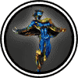

|

|
>> Содержание / Список кланов /
 SoulReavers SoulReavers
Как часто Вы смотрите на себя в зеркало?
Нет, не для того чтобы одёрнуть пиджак или поправить платье.
Вы ловили себя на мысли, что стоите перед зеркалом и смотрите себе в глаза?
Да? Вы не одиноки.
Глаза всегда были зеркалом души. Они отражают Вашу радость, они дают понять окружающим, что у Вас горе.
Зачем вы стоите перед зеркалом в ванной комнате?
Капельки холодной воды скатываются со лба и щёк к подбородку и медленно капают в раковину. Но Вы не замечаете этого.
Вы слишком увлечены познанием себя. Вы смотрите в глубь своих глаз, пытаясь понять, кто Вы.
Что скрывается за этими карими, серыми или, может быть, голубыми глазами? Что царствует в Вашей душе?
Добро? Или Зло?
Вы решили отдать себя служению Свету? Вы считаете себя Ангелом во плоти, который не совершил ни одного греха? Вы безумец.
Вы считаете себя Сатаной в человеческом обличии? Тогда запритесь дома и не мешайте существовать нормальным людям.
Каждый человек решает сам для себя какая из двух крайностей правит в нём.
Вы несёте частицу Света и частицу Тьмы, как весь Мир, ибо Вы - Часть Мира.
Выберите же Тьму, ибо ходящий в Свете не видит Тьмы, лишь темное смутное пятно может он лицезреть.
Преисполнивший же душу свою Тьмой видит и Тьму, и Свет, и различает одно от другого.
Пусть Вы сторонник Света. Но Тьма никогда не умрёт в Вас. Она будет спать в глубине Вашей Души. Там, куда Вы решили её спрятать, думая, что избавились от неё.
И придёт тот час, рано или поздно, когда Вы поймёте, что Тьма окутала Ваше сознание. Что вы давно уже не совершали благородных и бескорыстных поступков. Вы прочтёте это в Ваших глазах. Всё там же, стоя перед зеркалом в ванной комнате. Вы уже не увидите в них искры доброты.
Вам уже не хочется защищать слабых и помогать советом младшим. У Вас в голове мелькают мысли только о том, что нужно сделать, что бы скорее добраться до вершины.
Вы отнимаете радость у других людей. Видите, как тускнеют их глаза. Вы крадёте их душу, но испытываете от этого только чувство самоудовлетворения. Вы как вампир либо убиваете человека, либо делаете его себе подобным.
Но это не конец. Это начало конца.
Вскоре Вы увидите, что Вы не одиноки. Вы соберете вокруг себя таких же холодных и жестоких людей, Ваших братьев и сестёр. Вас будет объединять одна идея - разрушить мир Света, к которому Вы раньше так стремились. Тьма будет поглощать Вас всё больше и больше, всё сильнее объединяя Вас.
КЕМ Вы стали? Или, может быть, ЧЕМ?
Мы истинные дети Тьмы. Мы отдали ей свои Души. Так мы смогли избавиться от оставшегося в нам Света. Мы смеёмся, отнимаю у Вас жизнь в неравной схватке и проливая Вашу кровь. В Наших глазах Вы увидите только холодный блеск металла.
Не стоит думать, что Вы никогда не станете таким же, как Мы. Всё изменяется. Меняетесь и Вы, Ваше сознание, Ваша вера. Пройдёт время, и мы с радостью примем Вас в Наш Мир - Мир Похитителей Душ.
Официальный сайт клана: http://www.soulreavers.clan.su
|
 |
|